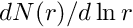
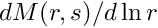

|
PartMC
2.8.0
|
Write full state.
| [in] | aero_binned | Aero_binned to write. |
| [in] | ncid | NetCDF file ID, in data mode. |
| [in] | bin_grid | bin_grid structure. |
| [in] | aero_data | aero_data structure. |
The aerosol size distributions (number and mass) are stored on a logarmithmic grid (see the Output File Format: Diameter Bin Grid Data section). To compute the total number or mass concentration, compute the sum over i of aero_number_concentration(i) * aero_diam_widths(i), for example.
The aerosol binned sectional state uses the aero_species NetCDF dimension as specified in the Output File Format: Aerosol Material Data section, as well as the aero_diam NetCDF dimension specified in the Output File Format: Diameter Bin Grid Data section.
The aerosol binned sectional state NetCDF variables are:
aero_diam): the number size distribution for the aerosol population, , per bindimid_aero_diam x dimid_aero_species): the mass size distribution for the aerosol population, , per bin and per species